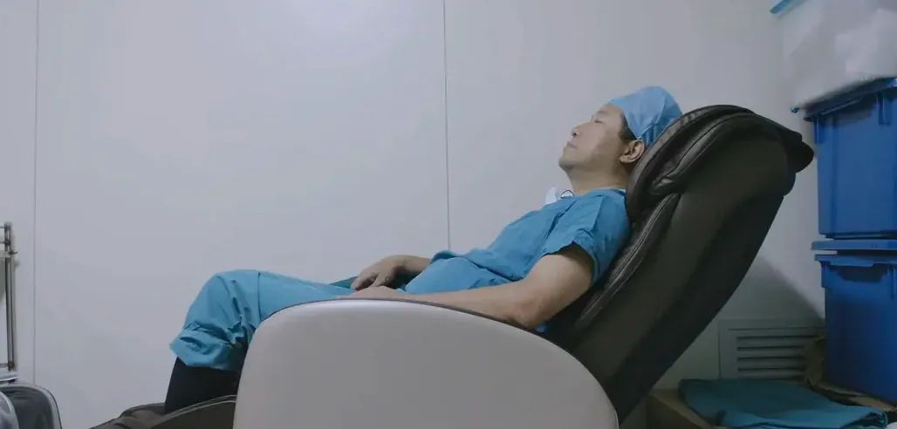

疫情当下，其他疾病患者怎么看病？
原文链接 备份链接 医院呼吁，并不危急的其他疾病患者，可以通过线上咨询、问诊，暂缓前往医院；但该看的病还是要去医院看，千万不要耽误治疗。 记者 | 周 洁 新冠肺炎疫情期间，其他疾病的病人怎么看病？记者连线上海各大医院发现，恢复门诊近一个 …

“
- 疫 情 之 下 -
由于医疗资源集中在新冠的防治上，他们求医问药的每一步，在这场劫难中都显得异常艰辛。
”
1
2月4日，正是疫情暴发期。
各个医院门诊挤满了发热患者，医院病房依旧一床难求。我服从医院安排，被调岗到本院急救转运中心上班，开始接触到了被疫情遗忘的一类重症患者。
那时候，武汉已经征召各个小区的酒店、党校对所有疑似患者进行隔离，汉口国际会展中心、武汉客厅、武昌的洪山体育馆已建立方舱医院对确诊的患者进行集中隔离。其中，急危重患者将根据工作人员安排，送往医院进行系统治疗。
2月9号，武汉市就还未住院的确诊重症肺炎患者进行集中收治，我们急诊转运中心也会接收这类患者。
这天，我们接到了120调度中心的出车通知，将急救车消毒后便驶向目的地。
到了之后，我们发现现场是个70多岁的爹爹，因不幸感染冠状病毒而出现呼吸困难，血氧饱和度下降，需要继续住院对症治疗。
但是规定，感染者必须通过社区进行上报转运。此前，家属已经多次联系社区工作人员，那边的一再回复是：“已登记，在等待排床位中。”
家属顿时急了，情绪激动地强调，患者病情已经十分严重，迫切需要入院治疗。
后来，社区才松口可以安排去同济医院。于是，我们把病人搬上车，就出发了。那时天已大黑，冬夜因为疫情整个路上冷飕飕、空荡荡的······
到了医院大门口，我们便被工作人员拦截了下来，只好解释说：“我们是社区转诊联系过来住院的，病人现在情况紧急，麻烦通行下。”
工作人员抬头看了我们一眼，“到大巴后面排队去吧。”
我们这才注意到，门口停了好几辆大巴车，车上都是载着方舱医院的患者，同样也在等待病床。没办法，患者年事已高，无法行动，我们只能陪着患者等待。后来，在寒风中等待了两个多小时，前面的队伍却毫无松动，病人在承受不了的情况下只好选择回家。

2
武汉现在是疫情的中心地带，而新冠感染者更是全国关注的重点。但在疫情之外，还有一类特殊人群也需要关注。例如那些患有慢性病需长期服药的、肿瘤放化疗还有尿毒症等患者。
由于医疗资源集中在新冠的防治上，他们求医问药的每一步，在这场劫难中都显得异常艰辛。
有一天白班，早上八点多，我就接到了出车安排。当时接到的信息是昏迷患者，但真到了现场，我还是感到震惊。
只见厕所门口地上趴着一个70多的婆婆，脸朝下，一动不动。我们过去将患者翻身平躺，其嘴唇发紫，口吐白沫，检查后发现已经没有了生命体征。
家里只有一个老伴，据爹爹讲诉，说婆婆平时还好，就这两天除了喉咙疼之外没啥别的不舒服，今天她上厕所时突然听到一声闷响，于是赶紧过来，发现已经唤不应了。
“你们没有过来，我也不敢动。”爹爹在一旁补充道。我注意婆婆手腕上的玉镯可能在摔倒的时候碎了一地，当时就觉着预感不妙。于是，告知婆婆可能已经走了有一段时间了，节哀顺变。
爹爹颤抖着联系了子女，直到我们后来离开，他嘴里还在反复念叨着：“明明昨天还是好好地，怎么突然就走了，怎么会……”只留下一个孤零零的背影和重重的叹息声。
普通人出现紧急意外时，最先想到的是120急救。可在这个过程中，从我们接到120调度中心安排出车，穿上隔离服，到对全车进行消毒，这个过程就会耗费十几分钟，可能就是拯救患者的黄金时期。而患者即使送往医院，也要经过发热门诊排查，经过一系列程序才能得到医治。
在这场严峻的疫情面前，我们病不起！
回来后，还没来得及坐下休息，我又接到了120调度中心的出车要求，说是一名昏迷的婆婆需要紧急救治。于是，我们在对急救车消毒后便出发了。
到了之后，发现是个60多岁的婆婆，躺在床上，呼之不应。我们边检查患者的生命体征，边询问老人有没有发热、咳嗽病史。
一旁的儿子交待说：“老人这段时间没有发热，就是有糖尿病，平时血糖控制不好，这段时间小区封的紧，老人也不敢随便去医院检查，就在家自己用药在。”
“老人家以前都是定期去医院检查监测的，这阵子也没听她说有什么不舒服，没想到这突然就叫不醒了，我母亲没什么事吧？”儿子的声音略显急躁与担忧，不停补充道。
我们当即对患者进行心电监护，查血糖偏低，于是给老人建立静脉通道，注射葡萄糖，依旧没有缓解，当即准备送往医院进行系统处理。司机在一旁叮嘱患者准备好行军床，做好防护措施，可能需要等待。
果然，到了协和急诊，发现里面人满为患，患者只能自己在门诊挂号排队，我们与那些医生做好交接，便离开了。

3
后来，根据省新冠肺炎疫情防控指挥部命令，规定武汉市目前仅有武汉同济医院、武汉协和医院以及湖北省人民医院本部可以接收非新冠肺炎患者，武汉市其它所有医院均被征用为新冠肺炎定点救治医院。
到了疫情发展的关键时期，武汉各个社区实施了更加严格的人员管控政策，除社区工作人员、志愿者、医务人员等可以出行，其它人员严格限制出入。
而这期间，普通的急诊患者要想就医，必须通过社区证明，联系这三家定点医院才能接收病人。这几天，由于社区加大了对发热患者的排查力度，安排有专车进行护送隔离，于是我们就多负责非感染者的紧急转运。
当天晚上，我们接到了120调度中心的出车指示，前往建设大道去接送一名昏迷患者。
后来到了目的地，出事的是一名70多岁的婆婆，据家属介绍，病人在昏迷前一天便诉单侧上下肢无力，有高血压等基础疾病。当时患者处于浅昏迷，初步考虑脑卒中。
于是，我们边将患者护送上担架，边询问家属是否联系社区工作人员安排送医，也跟家属解释现在非感染者就医也必须通过社区统一安排调度，否则120急救车到达是无法保证有病床的。
家属说社区有回复，愿意派一名工作人员前往，于是，我们便将病人送上了车。可临出发时，社区工作者称“人手忙不过来”无法陪同，当时家属开始有点急躁，面对老人岌岌可危的情况，便拨打110求助电话解决。
110出警了解情况后，安抚家属，开始调解，一边劝说司机护送患者到指定医院就医，一边督促社区安排人员。
我们的司机也表达了苦衷，“我们跑过好几次了，同济协和急诊室人满为患，都是需要紧急处理的患者，没有社区的调令，那边急诊是不予接诊的。”
“可是那边的社区不是说已经安排好了，可以过去的。”家属在旁边道。
“一般还是得有人陪同过去比较稳妥。”司机坚持说。双方一时坚持不下，气氛有点剑拔弩张。
毕竟大家在外面多延迟一会，可能就多一分危险。家属此时也尝试拨打市长热线，均忙线中，解决不了问题。
最后家属软磨硬泡，司机终于出发了。
到了协和急诊门口，里面排满了病人，更有甚者自带简易床在诊室等待医生。我们好不容易逮到机会跟医生说明了情况，可是医生也只能无奈表示只能排队等候。
急诊原本面对的都是突如其来的疼痛或者紧急发生的危险情况，医生更是每天与时间赛跑，身心俱疲。而新冠疫情暴发后，急诊科既是医院急救外伤患者的前沿阵地，也是阻击疫情的第一线，不仅承担着武汉市急诊患者的救治任务，也要做好新型冠状病毒肺炎的排查工作，一般需要护送患者完善胸部CT并排除新冠肺炎再送入手术室。
这虽然大大延误了病人的就诊时间，但如果对急诊患者不做好排除筛查，那么就有可能感染更多无辜的医生或者患者。
这一现实情况，让人无奈又心酸。
在紧封的小区内，还有大部分慢性疾病患者，他们或通过网上问诊，发帖求助，或他人代购勉强维持现状。如果不是这场疫情，他们很多都可能及时得到复查或者救治。而我们只能做的就是，尽最大可能的安全地将患者送进医院。
在这场新型冠状病毒的浩劫中，每个生病的人都在苦苦挣扎，以自己的方式在战斗着。
希翼这场风波能善待每一个人！
-END-
作者 | 木杉，青年作者。
//深根武汉十年的中医小姐姐//
题图 | 《中国医生》剧照。
华中科技大学出版社·武汉战“疫”数博馆
抗击新型冠状病毒感染肺炎疫情作品资料正在征集中——
【征集要求】
＊来稿应为未公开发表和出版的内容，题材不限，
VLOG、文字、图片等均可，务必客观真实，
反映疫情当下的民生现况及个人见闻；
＊提供作品者都将获得华中科技大学出版社提供的“宅家悦读大礼包”；
＊作品一旦录用，将提供完整规范的版权保护。
【投稿方式】
音视频：2279281426@qq.com
文字：423322329@qq.com
图片：454578039@qq.com
或点击下方链接直接投稿
http://2019ncov.xiushewang.com/
请务必留下真实姓名及详细联系方式。
“我故”故事练习生培养计划，详情请戳：

About us
主编：鹿｜本期编辑：鹿
Contact us
投稿/商务合作/咨询
微信后台留言 or 邮箱：wmsygsdr@163.com
**我们是有故事的人｜华中科技大学出版社官方故事平台**
原文链接 备份链接 医院呼吁，并不危急的其他疾病患者，可以通过线上咨询、问诊，暂缓前往医院；但该看的病还是要去医院看，千万不要耽误治疗。 记者 | 周 洁 新冠肺炎疫情期间，其他疾病的病人怎么看病？记者连线上海各大医院发现，恢复门诊近一个 …
原文链接 备份链接 有时候半夜突然想到某个可能的漏洞，惊出一身冷汗。 记者 | 黄 祺 抗击新冠肺炎疫情的紧要关头，医院不能失守。 中国疾控中心2月17日的一份研究报告显示，全国已有3019名医务人员感染了新型冠状病毒，其中包括1716 …
原文链接 备份链接 韩国1月20日发现首例确诊病例，此后一个月疫情发展缓慢，到2月18日确诊31例。2月19日后突然暴增，一周新增超过1200例。 18日确诊的第31号患者，被视为“超级传播者”。 韩国新冠疫情的一大特征是，在特定群 …
原文链接 备份链接 【财新网】（记者 赵宁 实习记者 曾美雅）北京大学人民医院一名住院病人感染新冠肺炎的消息传出后，北京疫情防控备受关注。国家主席习近平在2月23日的讲话中，更是将“全力做好北京疫情防控工作”作为了七项重点工作之一。由于医 …
原文链接 备份链接 经历整整31天的艰难考验之后，武汉疫情防控已经从无序走向有序，但千万居民的生活从无序到有序才刚刚开始，这个疫情核心区的社会经济生活全面恢复，还面临很多挑战 2020年2月11日，武汉市洪山体育馆武昌方舱医院，社区工作人 …